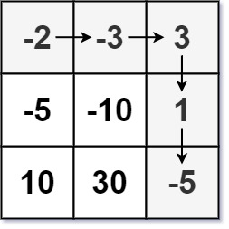

174. 地下城游戏
反向 DP：dp[i][j] = 走进 (i,j) 前至少要带的血量 = max(1, min(右,下) − 本格值)；从公主房倒推回起点。
思路
- 正着推不行：最小血量取决于后面的路，从终点倒着推才无后效性。
- 定义
dp[i][j]是「带着多少血走进 (i,j) 才能活着走到终点」。 - 转移：右/下的需求取较小者，减去本格值；血量还必须 ≥ 1，所以套
max(1, ·)。 - 公主房是边界：
dp = max(1, 1 − dungeon)；答案就是dp[0][0]。 - 血量是「至少要多少」而不是「最多能攒多少」，方向反了答案就错。
图解
最优解
1class Solution {2 public int calculateMinimumHP(int[][] dungeon) {3 int m = dungeon.length, n = dungeon[0].length;4 // dp[i][j]：走进 (i,j) 前至少要有的血量；从终点倒着推5 int[][] dp = new int[m][n];6 for (int i = m - 1; i >= 0; i--)7 for (int j = n - 1; j >= 0; j--) {8 if (i == m - 1 && j == n - 1) dp[i][j] = need(dungeon[i][j], 1);9 else {10 int nxt = Integer.MAX_VALUE;11 if (i + 1 < m) nxt = Math.min(nxt, dp[i + 1][j]);12 if (j + 1 < n) nxt = Math.min(nxt, dp[i][j + 1]);13 dp[i][j] = need(dungeon[i][j], nxt);14 }15 }16 return dp[0][0];17 }18 19 // 进房后血量变 val + 携带，须 ≥ 1 且够右/下的需求：携带 = max(1, after − val)20 private int need(int val, int after) {21 return Math.max(1, after - val);22 }23}题目
恶魔们抓住了公主并将她关在了地下城 dungeon 的 右下角 。地下城是由 m x n 个房间组成的二维网格。我们英勇的骑士最初被安置在 左上角 的房间里，他必须穿过地下城并通过对抗恶魔来拯救公主。
骑士的初始健康点数为一个正整数。如果他的健康点数在某一时刻降至 0 或以下，他会立即死亡。
有些房间由恶魔守卫，因此骑士在进入这些房间时会失去健康点数（若房间里的值为负整数，则表示骑士将损失健康点数）；其他房间要么是空的（房间里的值为 0），要么包含增加骑士健康点数的魔法球（若房间里的值为正整数，则表示骑士将增加健康点数）。
为了尽快解救公主，骑士决定每次只 向右 或 向下 移动一步。
返回确保骑士能够拯救到公主所需的最低初始健康点数。
注意：任何房间都可能对骑士的健康点数造成威胁，也可能增加骑士的健康点数，包括骑士进入的左上角房间以及公主被监禁的右下角房间。
示例 1：

输入：dungeon = [[-2,-3,3],[-5,-10,1],[10,30,-5]] 输出：7 解释：如果骑士遵循最佳路径：右 -> 右 -> 下 -> 下 ，则骑士的初始健康点数至少为 7 。
示例 2：
输入：dungeon = [[0]] 输出：1
提示：
m == dungeon.lengthn == dungeon[i].length1 <= m, n <= 200-1000 <= dungeon[i][j] <= 1000
题面取自力扣当前版本。
数据快照 2026-11-04。题面版权归力扣所有，本站点仅供本人学习使用，请勿对外发布。